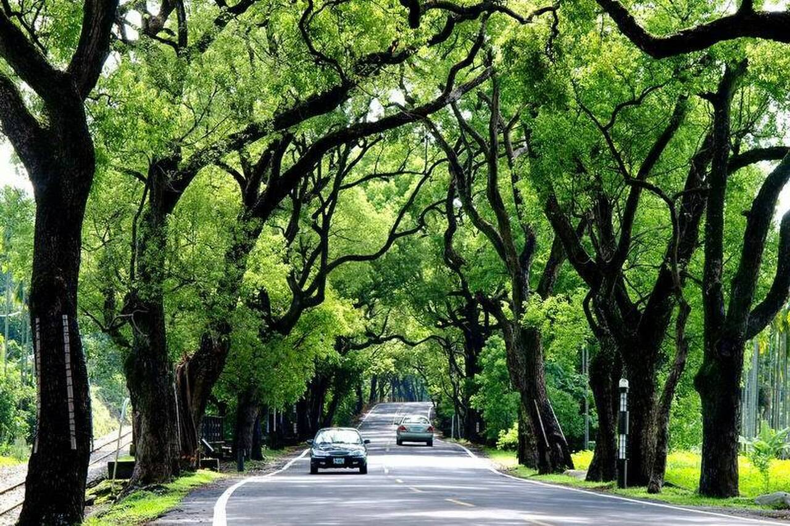

集集綠色隧道｜【授權待確認】使用前請查 Commons 檔案頁數位人文地方策展專題實作｜第二組
兩腳詩集
一腳一印，留下綠色足跡
慢慢走進展覽策展論述
還記得小時候，
牽著家裡那台黑色的鐵馬，
後座載著米、載著弟妹，
一路騎過鄉間小路嗎？
在集集，有一條長約 4.5 公里的綠色隧道，老樟樹在頭頂交織成拱廊，鐵道就在一旁陪著。我們相信，用雙腳走過的路，就像一首詩：慢慢讀，才看得見風景。
這個展覽邀請您放慢腳步，從綠色隧道出發，想起老鐵馬的故事，最後留下一個屬於自己的綠色腳印。環境永續不只是政府或環保團體的事，而是每個人都能做到的日常。
三個展區
組長請在這裡放一張組員實地走綠色隧道時拍的照片，並寫一句「我們用雙腳讀到的集集」。完成後刪除這個虛線框。